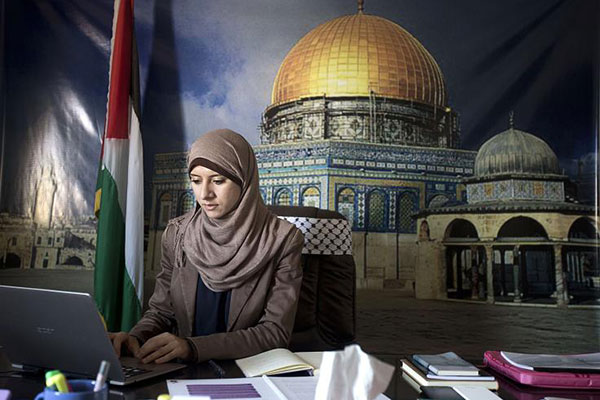

|
|

برای اولین بار، یک زن سخنگوی دولت حماس شد
يكشنبه26 آبان 1392
مجله مهر: مقامهای حماس برای اولین بار یک زن را به عنوان سخنگوی این گروه انتخاب کردهاند و با این اقدام باعث جلب توجه رسانهها شدهاند. این خبرنگار ۲۳ ساله اما چطور به سخنگویی حماس رسیده و قرار است چه روندی را پیش ببرد ؟
اسرا مدلل، با ۲۳ سال سن حالا شاید یکی از جوانترین سخنگوهای حماس باشد. او اولین زنی است که مقامهای حماس به عنوان سخنگو انتخاب کردهاند و به خاطر پشت سر گذاشتن بخشی از دوران مدرسهاش در یورکشایر،زبان انگلیسی را روان صحبت میکند. سخنگوی جدید حماس اما با وجود جوان بودن یک دختر بچه ۴ ساله دارد و در ۲۰ سالگی از همسرش جدا شده است. در زمان مدرسه رفتن مدلل،پدر او در انگلیس دانشجو بود و به همین خاطر او پنج سال از زندگیاش را در انگلیس پشت سر گذاشته است.
او در گفت و گو با روزنامه گاردین از دوران زندگیاش در یورکشایر به خوبی یاد کرده و گفته است خاطرات خوشی از آن دوره زندگیاش دارد. مدلل تحصیلات دانشگاهی خود در رشته مطالعات رسانهای را در دانشگاه اسلامی غزه تمام کرده و به عنوان خبرنگار و گوینده تلویزیون فعالیت داشته است. او ولی بر خلاف دیگر سخنگوهای حماس در گفت و گو با رسانهها تلاش داشته خود را بیارتباط با حماس بداند و تأکید کرده که عضوی از این جنبش نیست. او گفته است وابستگی حزبی دیگری هم ندارد و فقط یک فلسطینی است که میخواهد برای کشورش کار کند.

شبکه تلویزیونی الجزیره گزارش داده که در اتاق کاری این خانم بر خلاف دیگر مقامهای حماس خبری از عکس اسماعیل هنیه(نخست وزیر دولت حماس) نیست و او در کنار قرآن یک کتاب مربوط به تاریخ آمریکا دارد. خبرنگار این شبکه همچنین گفته است که سخنگوی حماس به جای استفاده از «دشمن صهیونیستی» از واژه اسرائیل استفاده میکند. برخی عقیده دارند که حماسیها با انتخاب این زن خبرنگار به دنبال ارتباط بیشتر با رسانهها هستند اما گروهی از منتقدان هم میگویند که تغییر لحن سخنگوی حماس و به ویژه استفاده از نام اسرائیل نشان میدهد این جنبش به جای ادامه مسیر مبارزه میخواهد راه سازش را دنبال کند.
تغییر در روندهای رسانهای حماس از شش ماه قبل و با انتصاب ایهاب غصین به عنوان رئیس دپارتمان رسانه دولت این جنبش شروع شده است. این رئیس جدید به دنبال استخدام نیروهای جوان و استفاده گستردهتر از شبکههای اجتماعی و رسانههای جدید است. غصین در گفت و گو با روزنامه الشرق الاوسط درباره انتخاب مدلل گفته است که این اقدام بخشی از تلاشهای حماس برای ارتباط بیشتر با غرب است.